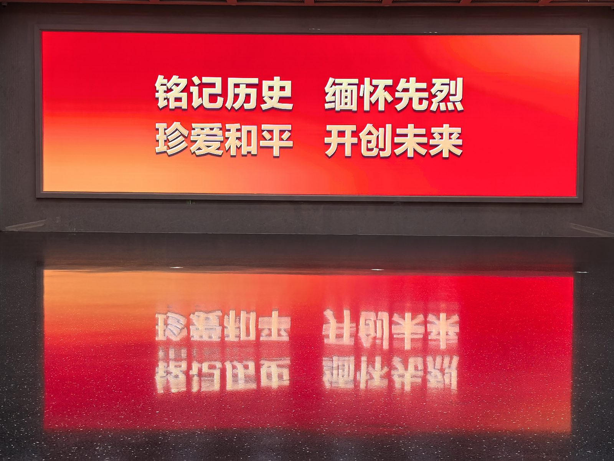
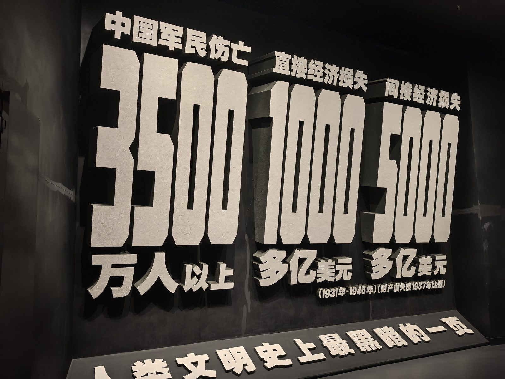
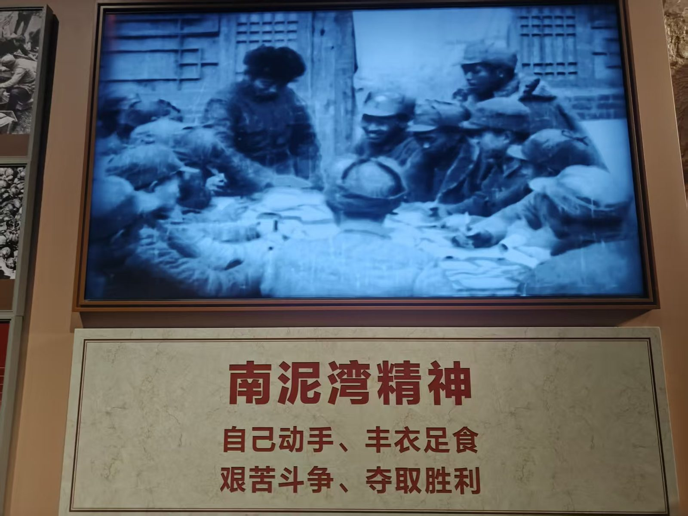
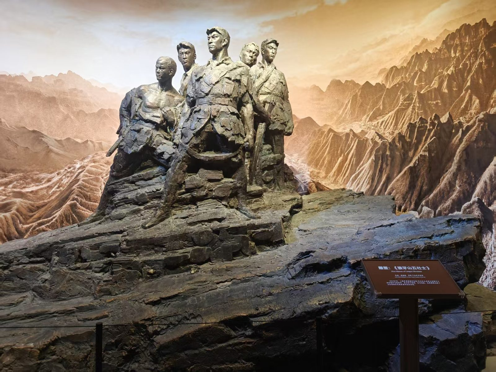
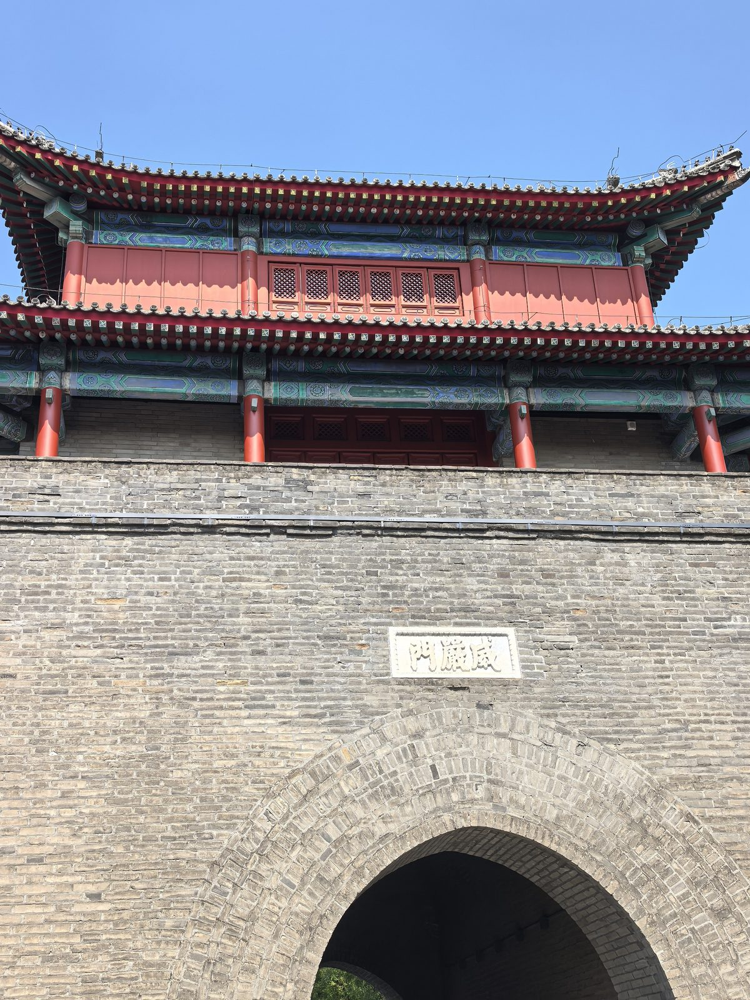
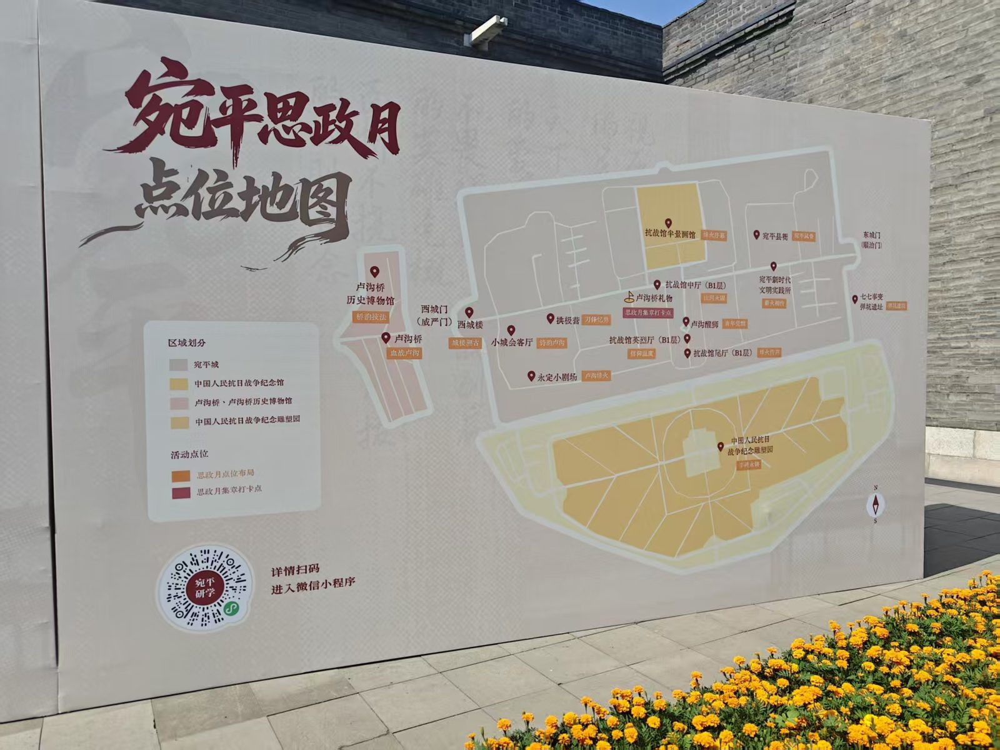
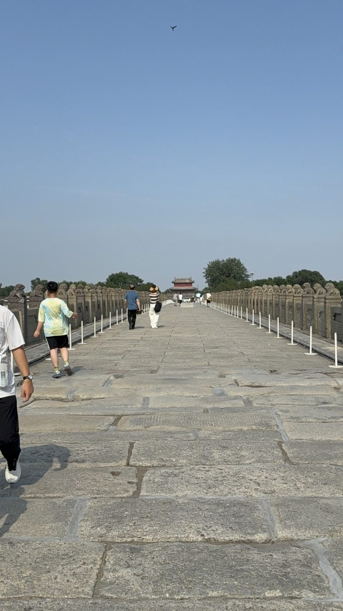
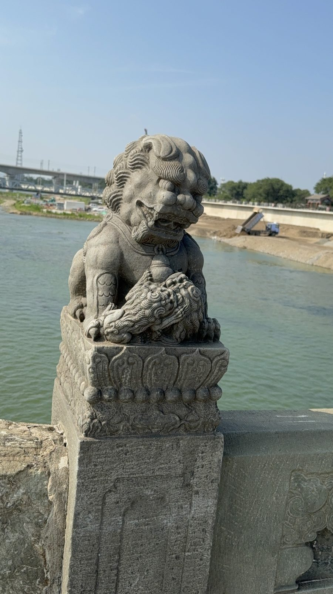

影像集
照片与视频

中国人民抗日战争纪念馆 · LED 主题屏「铭记历史 缅怀先烈 珍爱和平 开创未来」

中国人民抗日战争纪念馆 · 伤亡损失立体数字墙

中国人民抗日战争纪念馆 · 南泥湾精神电子屏

中国人民抗日战争纪念馆 · 狼牙山五壮士雕塑场景

宛平城 · 威严门

宛平城 ·「宛平思政月」点位地图与研学小程序

卢沟桥 · 桥面石板路与石狮望柱

卢沟桥 · 石狮特写（背景为永定河）
永定小剧场 · 沉浸式情景剧（LED 大屏卢沟桥画面背景）